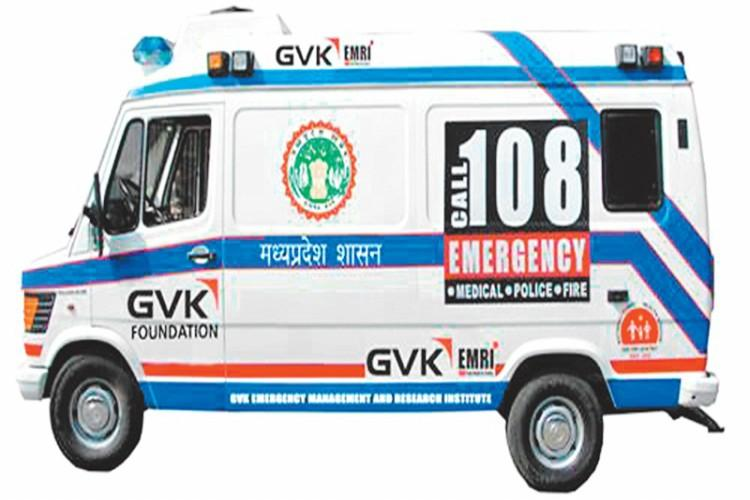

GVK EMRI (Emergency Manegement and Research Institute) is a pioneer in Emergency Management Services in India.
As a not-for-profit professional organisation operating in the public Private Partnership (PPP) mode, GVK EMRI
is the only proffessional Emergency Service Provider in India today. GVK EMRI handles medical, police and fire emergencies
through the "1-0-8 Emergency service". This is a free service delivered through state - of - art emergency call response
centers and has over 2600 ambulance across Andhra Pradesh.
Gujrat, Uttarakhand, Goa, Chennai, Rajasthan, karnataka,
Assam Meghalaya and Madhya Pradesh with the expension of fleet and services set to spread across more state, GVK EMRI
will have more than 10000 ambulance covering over a billion population by 2011.